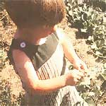
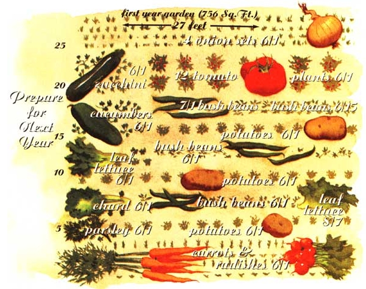
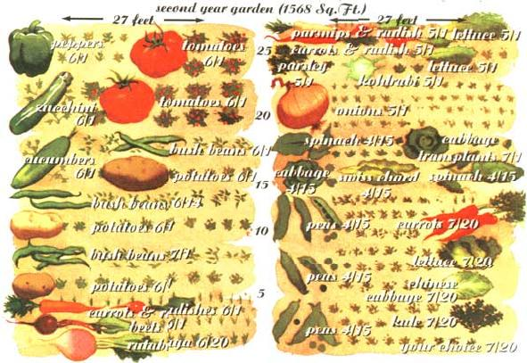
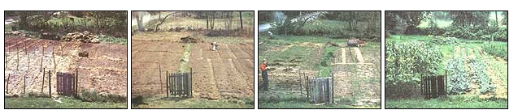
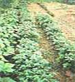
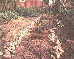
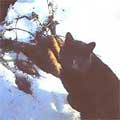

Planning, planting, and harvesting the year-round garden.
Born in 1938, I was a product of the Great Depression. Ben Franklin's words from another era, "waste not, want not;" are burned into my psyche. How could people have gotten into the dreadful positions in which they found themselves during the thirties? More important, how could I avoid the same kind of pain and struggle if history repeated itself in my lifetime?
Living in New York City in the '60s I felt even more vulnerable. Remember when the lights went out in the entire Northeast? People were stuck in elevators and subways for hours. If the electricity were off long enough, there would be no water. When the sanitation workers went on strike, garbage piled up on the streets for weeks. Progress ...hmm.
What if everything failed, all that we have created in the industrial age-roads and means of transportation, electricity, communications, water delivery, the economic system? The farm in Maine that I purchased in 1969 became the focus of those thoughts. I could walk from New York City to Maine if I had to. I could dip my water out of a hand-dug well that was there. 1 could become a hunter-gatherer, if need be, on my own and nearby lands. These thoughts relieved my anxiety over being dependent on electricity, municipal water, and the complex and expensive food distribution system. Not only did the notion of independence relieve anxiety, it felt really good. The more I thought about it the better it felt.
When we moved to the farm in 1972 I decided to try to meet our needs as directly as possible. We needed to heat our house and we had lots of trees on the land, so we converted the heating system to wood and started cutting and splitting. While food is certainly a very basic need, I also find it to be a great source of pleasure. I wanted more variety and refinement than a hunter-gatherer's diet. Thus I began gardening for independence.
We need air, water, and food to live. Air and water were taken care of (though I later got involved in protecting those basics). That left food. The idea was to plant, tend, harvest, and store enough food to feed first two, then later, four people for 365 days. It would, presumably, be easier in the Garden State, New Jersey, or the central valley of California. But we lived in Maine and had no desire to relocate. I welcomed the challenge.
Three years later when I pried the first parsnips from the not-quite-yet-thawed ground in the spring, we were still eating potatoes, carrots, onions, winter squash, tomatoes, peas, green beans, spinach, cucumbers and rutabaga that we had stored from the previous summer's garden. True, we were dying for a fresh salad; but there was certainly plenty of variety available to us. Several years after attaining vegetable independence, I was asked to teach a gardening class. As the core of this class I designed a first- and second-year garden for beginning gardeners interested in growing all their own vegetables in our northern climate. Successfully planting, tending, harvesting and storing the vegetables from these two gardens would prepare a person pretty well for planning their own full-size garden in the third year. I think I was offering more than a four-year college degree in just three-a degree of self-sufficiency.
My first-year garden is strange compared with most first-year gardens. It is not recommended as a first garden for anyone who does not have a goal of providing all their family's vegetable needs directly from the soil. A novice need not make such a dramatic plan.
However, this garden is designed to give a novice confidence in growing and storing vegetables. Onions are easy to grow and store well at any temperature above freezing. Tomatoes and green beans can be canned or frozen. Potatoes and carrots do best in a cool, dark, humid place. A root cellar is ideal, but they can be stored right in the garden under an insulation of hay.
The rest of the crops are there for variety and some summer eating. The second planting of lettuce and the second and third plantings of beans are examples of succession planting. The beans and potatoes are planted together as an example of companion planting.
Planning the Plot
[Illustrations]
The garden is a place for both plants and the gardener. I give myself one foot wide walkways. This allows me to work around the garden without stepping on the soil in which the roots will be spreading. I have found that it is difficult to work soil farther than two feet from where my feet are, so I space the walkways no more than four feet apart.
Each plant is given the space that it needs. For instance, I plot a three-foot-by three-foot square for zucchini. It is a big bushy plant that covers an area with a diameter of three-and-a-half to four feet. When it reaches maturity and overreaches the space I gave it, my visits will be less frequent, only coming by to harvest. Onions, however, grow almost straight up, with slim leaves taking very little space. They are spaced an onion-width apart in rows eight to 12 inches apart. The space between rows is enough to fit my wheel cultivator or a hoe.
The rectangles for each vegetable indicate the space planned for the mature vegetable. The seeds or transplants are planted in the center of these rectangles.
When drafting my garden plot I work in pencil. I have erased through the paper at times as my winter reading has brought a new idea to light. The dates are target planting dates. When I do the actual planting I ink in the date and variety planted, the plot then becomes an excellent record for future reference.
I run my rows north-south. My reasoning is that there is more space between the rows than between the plants in the row. The sun sweeps across the garden every day and will reach each plant more fully if the rows run north-south. In all honesty, if this makes any difference, it's minimal. I just do it because I came up with the idea and because my garden is flat, so I can run the rows any direction I want to. If my garden were on a slope, I would run the rows across the slope, not up and down. You want to do anything you can to prevent erosion.
The first plot is designed to give a novice gardener confidence while introducing a number of gardening techniques. You will notice that most of the planting for the first year is done on Memorial Day weekend. This is the beginning of the frost-free season in my garden, and the time most gardeners in this area do most of their planting. The idea is to focus on planting for a day when the motivational juices of spring are running high.
Tilling and Planting
Ideally the garden spot was tilled between a week and two weeks before planting (see "Turning Sod into Garden Soil," in the January issue, #153). During the 10 days, give or take, since tilling, thousands of weed seeds have sprouted. They send hairlike roots down and a fragile stem up. You can easily dispatch these thousands of weeds by raking, hoeing or otherwise cultivating the soil surface before planting. Do it.
Onions
Onions are easy to plant, easy to grow, and easy to store. One hundred feet of row will yield as much as 100 pounds of onions from two pounds of sets. Sets are small onions that were started from seed and had their growth interrupted. I make a trough two or three inches deep with the corner of my hoe, push the sets into the bottom of the trough root-end down, pull the soil back into the trough, and firm it.
Zucchini and Cucumbers
To plant zucchini and cucumbers I spread the fingers of one hand as widely as possible and push them into the soil in the center of the designated area, making five indentations about half an inch deep, drop a seed in each, fill with soil, and firm with my hand.
Tomatoes
Tomato seedlings are practically indestructible except by cutworms. The defense against cutworms is to make the transplanting as stress-free as possible. We're talking about the plant's stress, not yours. Seedlings are, after all, babies, and should be treated as such. They have been growing inside, so make their transition to the outdoors gentle. Expose them to the sun an hour the first day, two the second, four, six, in successive days. This is called hardening-off. I put them in a place where the sun's movement will cause them to be in shade after approximately the time I plan for, so that they will not get sunstroke if I forget.
The next trick is to separate them without damaging the roots. The roots will have become tangled together in the planting mixture of the seedling flat. I remove the flat and place the mat of roots in a bucket of water, into which I poured a couple of tablespoons of liquid seaweed. I work the plants back and forth in the water while pulling them gently apart. Some roots will break-it's inevitable. But tender loving care will keep the damage minimal. Plant them two or three inches deeper than they grew in the potting soil in holes three feet apart. They love it when you work some compost into their new home. Firm the soil around their roots. When they are all planted, empty the bucket of water on them equally. Then give them some more water so the soil is soaked down to the bottoms of their roots. The best time of day to do this is evening so they don't have to withstand a blazing sun all day while they are trying to adjust to their new environment.
Cutworms are gray grubs of a night-flying moth. They like wilting plants. That is why you want to make the transition as easy as possible so the plants don't wilt and send out the dinner-bell signal to cutworms. When I do lose a plant I just stick in another that I have waiting for such an eventuality. If you are worried or don't have backup plants, you can put up a barrier for the cutworm. The cutworm wraps its body around the stem of the plant and then cuts through the stem close to the soil line. You can put a match stick next to the stem to prevent them encircling it, or a collar to keep them from reaching the plant.
Bush Beans
I plant bush beans the same as onion sets except that I drop the seeds into the trough about two inches apart. Same with potatoes except the though is deeper, about six inches, and the potato pieces are spaced about a foot apart.
Potatoes
Potatoes are grown from the eyes of potatoes. You cut potatoes into pieces making sure each piece has an eye in it. My pieces are about golf ball size but they can be much smaller. In fact, we have had potatoes grow on the compost pile from potato peelings.
Many seed companies now carry seed potatoes but I still prefer getting them locally. You can use potatoes from the market but you don't know what variety they are. They are not certified against disease but then neither am I. That may sound like a joke but it is also intended to make some sense. We are all surrounded by disease organisms all the time. It is not so much the presence of these organisms that makes us sick but our health that makes it possible to resist disease. Concentrate on having healthy plants in a healthy soil rather than avoiding disease organisms.
Carrots
Carrot seeds are small and germinate slowly. They also should be planted fairly close to the surface, no more than a quarter inch deep. Wiser people than I discovered that if you mixed carrot seeds and radish seeds together, you would be able to space the seeds better. The radish seeds germinate very fast, four or five days, and grow to maturity in three to four weeks. They pop out of the ground showing you where the carrots are located, which makes cultivation easier. They shade the row, holding in moisture, which helps the carrots germinate.
Parsley
Parsley is of the same family as carrots and can be planted the same way. Lettuce seed should be planted very shallowly, covered with just a sprinkling of soil. Because they are so close to the surface the soil needs to be kept moist until the seeds have germinated. The only time I water my garden is when new seeds are trying to germinate and the weather is especially dry. Lettuce grows best in cool weather, so you should be careful to pick varieties that do better in summer. Romaine lettuces and buttercrunch are two that have been consistently good in the heat of summer. Swiss chard is planted about half an inch deep.
Weeding: The 10-Day Rules
All but the row that will be getting succession plantings of beans have been planted. The job was done in less than a day. You should get a great night's sleep and your body should not feel too much the worse for wear the next morning. You don't have to do anything else to this garden for 10 days. If you are going to use mulch to improved soil texture, control weeds, add fertility, and retard the evaporation of water from the soil surface; you can begin applying it. Coarse material like hay or straw can be applied to the walkways and around the zucchini and cucumbers. You will be able to see where you planted because of the firmed soil. You can also mulch around the tomato plants. All of this mulch should be about six inches thick. If you are using baled hay or straw, it peels off in books that can be dropped just as they are. If the material is loose and fluffy, it should be more thickly applied.
The 10- day rule is one that you should make every effort to obey. Whenever you plant, mark your calendar to cultivate in 10 days. It can be done a couple of days earlier or a day later if the weather or your schedule demand it, but don't let it go longer unless you like to make extra work for yourself. Remember, you killed all the weeds that had started growing before you planted. But your planting disturbed the soil and brought a new batch of weed seeds close enough to the surface for them to sprout. A light surface hoeing just barely disturbing the top half inch of soil will again kill thousands of weeds when they are at their most vulnerable. These seedlings will not be able to reroot nor will they resist the hoe. It is like slicing butter. Every day after 10 the weeds will be spreading roots and their stems will become stronger. More mature weeds can cling to enough soil to keep on growing even when pulled up by the hoe, or the roots may hold on against the hoe leaving a viable plant behind.
Controlling weeds that have gotten a hold requires more vigorous work with the hoe-good exercise for the stomach, chest, and arm muscles if that's what you are looking for. You will also spend more time pulling weeds.
Mark your calendar for another 10 days. The radishes and the onions are up by now, marking those rows. I like to mulch these crops with grass clippings, whereas the potatoes seem to do better with leaves. Mulching with leaves requires a calm day so they don't blow around, however. I cover them with enough of another mulch to keep them from taking flight. If everything is mulched by the end of the second 10-day period, weed control is essentially done. If not, cultivate the unmulched areas.
I say essentially because there will inevitably be some weeds that have escaped our diligence. There are only two crops that might suffer from weed competition.
Onions, with their very slender leaves, need full sunlight. Keep an eye on them and pull weeds as needed. This will not be much of a job. The other crop is lettuce. It just doesn't like crowded places. Weed it and thin it to about four inches apart. When these plants start to crowd each other, take out every other one for a tender salad.
One Month Later, You Start Eating
Come the third to fourth week, you can start eating radishes. When they are at their peak pull them all. Take off the tops, wash them, and put them in a plastic bag in the refrigerator. They will last a couple of weeks. If you like radishes the way I do, throw a few seeds in some corner that looks possible.
While pulling the radishes you might have come across some weeds that you felt like pulling while you were there. The carrots might benefit from some thinning, too. Get rid of the extra zucchini and cucumber plants by pulling all but the two strongest.
Visiting the garden at least once a week is an excellent plan. All of the "jobs" I have mentioned since planting can easily be handled in an evening or two a week. While you are visiting the garden you should be checking the plants to see how they are doing. The potatoes may have attracted Colorado potato beetles. The beetles don't eat much themselves, but they lay clusters of yellow-orange eggs on the underside of the leaves of potato plants and sometimes tomato plants. These eggs will hatch in four to seven days, depending on the air temperature. The brick-red grubs are pretty hungry and can defoliate the plants. Until recently I controlled these fellows by hand. I went down each row at least weekly, checking the underside of the leaves for egg clusters and crushing the clusters twixt finger and thumb. Inevitably a hot, humid spell would keep me out of the garden and they would get ahead of me. When that happened I usually quit harassing the bugs and let them do their worst, which may have resulted in a diminished crop, but still more than satisfactory results. Some years I have had very little damage without any hand picking. 1, of course, attribute that to my soil and the poor years I blame myself for not getting the fertility right.
A recent breakthrough in biological controls has given me an option that I find acceptable. Bacillus thuringiensis (BT) is a bacteria that only affects insects that eat it as opposed to most insecticides which kill everything they touch. One variety is Colorado Potato Beetle Beater, available from Johnny's Select Seeds, Albion, Maine 04910-9731.
The only other insect that has done substantial damage to any of these crops as I have grown them over the past 24 years is the tomato horn worm. You are likely to spot the damage first and then the droppings. This is a large (about the size of a finger), green worm with-you guessed it-a horn on its tail. It takes some patience to locate it. My control has always been to find them, pick them off, and stomp on them. The more squeamish might want to wear gloves or get tongs or pliers. They can't hurt you, but they will squirm around a lot when plucked from the plant. There is a widely available BT spray that works on all moth and butterfly larvae. Dipel is the one I am most familiar with, but there are some other brands. This stuff will kill the larvae of any moth or butterfly that eats it but don't worry about destroying the butterfly population. Most butterflies don't lay their eggs on plants in your garden. In its adult stage the tomato horn worm is a moth. It can be mistaken for a humming bird as it is approximately the same size and moves the same way.
I could fill a page with insects that you might find on your preciously planted plants, but that would just make you paranoid. Instead, cut down on your entomological studies and just keep your plants as healthy as possible; if you see insect damage, try to figure out who is responsible. Observe the insects. The chances are the damage will be minimal. If a crop is destroyed, thank the insect for indicating that the crop was inferior and not fit for your table anyway. Recognize that the plant was under stress, probably due to an imbalance in soil nutrients. Get a soil test. Make more compost. Arrange for some manure.
Harvest
On your frequent visits to the garden you will see the beans blossoming. Each blossom will become a tiny bean, which will grow practically while you watch. They can be eaten at any size, so when they are two or three inches long have a taste. The first picking will be light and best cooked right away for a tender meal of garden sunlight. Fifty feet of beans is quite a bit. The plan here is to pick enough at their peak to store for the winter. Our favorite storage method for beans is to freeze them. We snap off the ends, snap them in two or three, drop them into boiling water for a couple of minutes, then plunge them into ice water, drain in a colander, put in a plastic bag or container and freeze. If you want to be able to take out a handful of beans from a larger container and leave the rest in the freezer, dry the beans on a towel before freezing.
This garden does not give you any other green vegetable for winter use, so you may want to put away more than in future years. Figure on 25 weeks when you won't have greens from the garden. How often do you want to eat beans each week? You don't want to get sick of beans. They are too good.
The onions are ready to be harvested when most of the tops have flopped over. There is no hurry to harvest them. When you are ready pull them all and leave them lying right in the rows. I try to leave them lying in a way that allows the most air to get around them. Leaves that are still green are laid out so they will dry rather than rot. The only danger is when the harvest is late enough in the fall so there might be a freeze. I spread them out on the porch when this is a possibility.
Once the tops are dry the onions can be put in a mesh bag and stored anywhere that won't freeze. Colder is better according to the experts, but we have had braided onions last until spring that were hanging from the kitchen ceiling where the temperature must have gone over 80 degrees Fahrenheit.
Separate any onions that have thick necks and use them first. If you have a lot of thick neck onions, make onion soup and freeze it.
Tomatoes are so good for so mane dishes. We have no preference over canned or frozen. When we were raising our own meat and the freezer was frequently full, we canned. Now we freeze. When there is danger of frost, some people cover their tomatoes. We used to. It was such a hassle and we were never sure we got much, if anything, for the effort. Now we bring in all the green tomatoes we think we can stand when frost threatens. We love fried green tomatoes and green tomato chutney is great, too. We have pickled green tomatoes, though other people's always seems better than ours somehow. The green tomatoes will ripen in the house. Though their flavor is not as good as vine-ripened they still beat store-bought. We have tried wrapping them in newspapers, keeping them in a cool place and various other suggestions we have read about. Last fall we just put a bushel basket full on the floor out of the way. We picked through the basket whenever we wanted tomatoes, moving ripe ones up or out onto the floor where they could be easily spotted by anyone with an appetite.
When we were heating with wood stoves in the house the cellar became a perfect place to store potatoes, carrots, beets, turnips, and cabbage. It literally has water running through it. The floor is dirt and the temperature is below 50 degrees Fahrenheit most of the winter, and only goes below freezing in a couple of places where I have water pipes. The stored crops have never frozen. I made wooden boxes for each crop and set the boxes on blocks so they would not get wet. The humidity and temperature have been close to perfect: The crops always lasted through the year.
We have a furnace in the cellar now, and the conditions are not as good. Potatoes do well, but it is too dry for carrots. The trick with this crop is to experiment with storage solutions to find one that best fits your situation. The optimal temperature for potatoes is 38 degrees F to 40 degrees F with a relative humidity of 85 to 90 percent. For carrots the optimum is 32 degrees F and a humidity of 90 to 95 percent. (Handbook for Vegetable Growers by James Edward Knott, John Wiley & Sons, Inc., NYC)
One of the options is to keep them in the garden. Place bales of hay right over the rows of carrots where they are growing. The carrots should be at least eight inches from the edge of the bale in our climate-whatever it takes to insulate them from freezing. You can remove the bales in the winter and pull the carrots. Those orange carrots really look great lying on top of the snow. I just wish Barbara would tell me she has run out of the supply in the refrigerator before the blizzard rather than after.
The same could be done for potatoes, though I have never done it. There is a danger that some rodent gets in under the mulch and has a feast. The best winter storage potatoes I ever had late in the winter came out of a hole I dug in the woodshed, another dirt floor. I buried a wire basket full of potatoes in the dry sandy soil where I reasoned I would be able to dig it out any time. I reasoned correctly. Even though the woodshed had approximately the same temperature as outdoors, there was not enough moisture in the soil to freeze. When I dug the basket up, the top layer of potatoes had frozen and had to be thrown out. The rest were perfectly firm and tasted superb.
It is time to invite people over for Thanksgiving dinner. Beans, potatoes, onions, and carrots from your garden will grace the table. How about fresh carrot sticks as an appetizer. Did you think I forgot to mention the succession planting of lettuce? That lettuce planted in early August might well have withstood several frosts and be available for a salad, that is if the deer, woodchucks, or rabbits didn't eat it. Lettuce cells are flexible enough to take a certain amount of freezing, and we frequently have it available until the end of November.
The idea of companion planting is that one crop helps another, that there is a symbiotic relationship. I read that insects that like beans don't like potatoes and visa versa, so I coupled them. Darned if I know if it does any good, but the two crops go well together so I just keep doing it. It doesn't hurt.
Cabbage will be a new challenge. Ideal storage temperature is 32 degrees F at 90 to 95 percent relative humidity. I'm thinking of making a room in my cellar that is insulated from the heat of the furnace for troublemakers like these. An insulated box in the wood shed with a pan of water in it is another thought. I do miss the perfect root cellar but without the furnace we can't leave the house for more than 12 hours at a time in the winter.
Nothing has fascinated me for as long as gardening. There are so many variables and so many things yet to be learned the mystery of the soil, the beauty of growth, the timing, the search for the best variety of a vegetable, the fresh air, my bare feet connected to the earth, working with nature, learning, observing, and every year tasting and being nourished by the product of this collaboration.
Mort is now on his 26th self-sufficient garden and immodestly reports that the last time he went to the grocery store was for batteries.
|
 The four-step progression of a self-sufficient garden. in the spring the walkways are laid out, and the beds are prepared for planting. A few weeks battling weeds and tending new plantings in the spring...and you won't recognize the place for the bounty come early summer. |
 Keep spaces between rows to a minimum. |
 The late-season potato harvest. |
|
 Harvesting carrots in the late, late season. |
 |
 |
|
 |
|
|